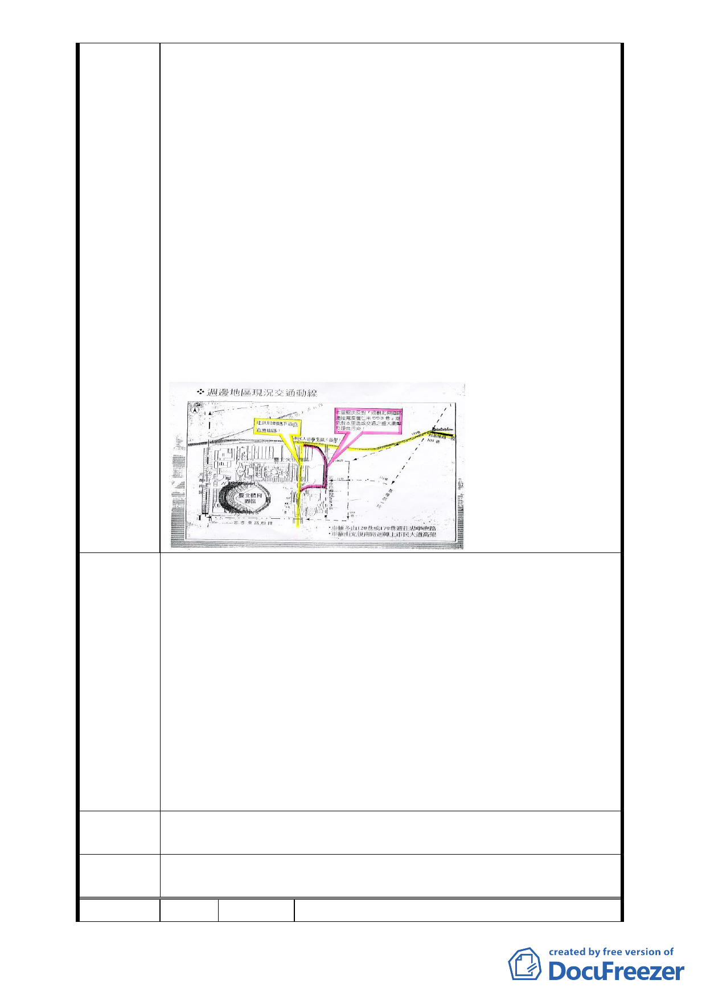

光復南路右轉 90 度至該局西側，再左轉接逸仙路。553 巷的
長度僅一百九十多公尺左右，根據此規劃，整整轉三個 90
度角的彎，才能從光復南路到逸仙路，對道路使用人而言非
常不方便又危險；對全巷的交通也有相當大的影響。懇請各
位不要做對行車及行人有危險的道路計畫。
６本里認為「大巨蛋案」的交通動線應說明白，這個案子「文
化園區」與「體育園區」在同一基地上，兩案使用的道路也
都一樣，一定會互相影響；同時，目前的交通影響評估皆以
四萬人次計算，然而幾次變更案下來，量體仍不斷擴大，本
里主張不應僅以活動的人潮四萬人評估交通狀況，應計入包
含文創產業等商業設施的人潮，來衡量週邊地區交通狀況，
規劃交通動線。本里主張本案交通評估應將「體育園區」與
「文化園區」的交通影響一起講清楚。並做出承諾車子絕對
不可進入 553 巷與新仁里的社區，同時要求開發單位來本里
辦交通說明會、聽聽本里里民意見。
1.本里針對前述變更事項，建議重新規劃，並提出兩種可能規
劃方式：
（1）規劃地下道，直接由市民大道南支線（高架）通逸仙路，
方可減緩附近居民的交通衝擊，並得以依照車流需求規
劃道路寬度；
建議辦法 （2）改採規劃市民大道南支線（高架）直接銜接基隆路 101
巷路段，該路段寬 20 米，較能承受本開發案所帶來的巨
大車流量。（見附圖）
2.都市計畫應以百年大計的眼光來規劃整個城市的發展，臺北
東區的商業設施已經飽和，本里建議應將松山菸廠規劃為森
林運動公園。
專案小組
審查結論
同編號 2
委員會決
議
同編號 1
編 號 18 陳情人 徐秀珠、鄭卉妤、徐儷玲、徐鴻錦、張翰文
- 18 -